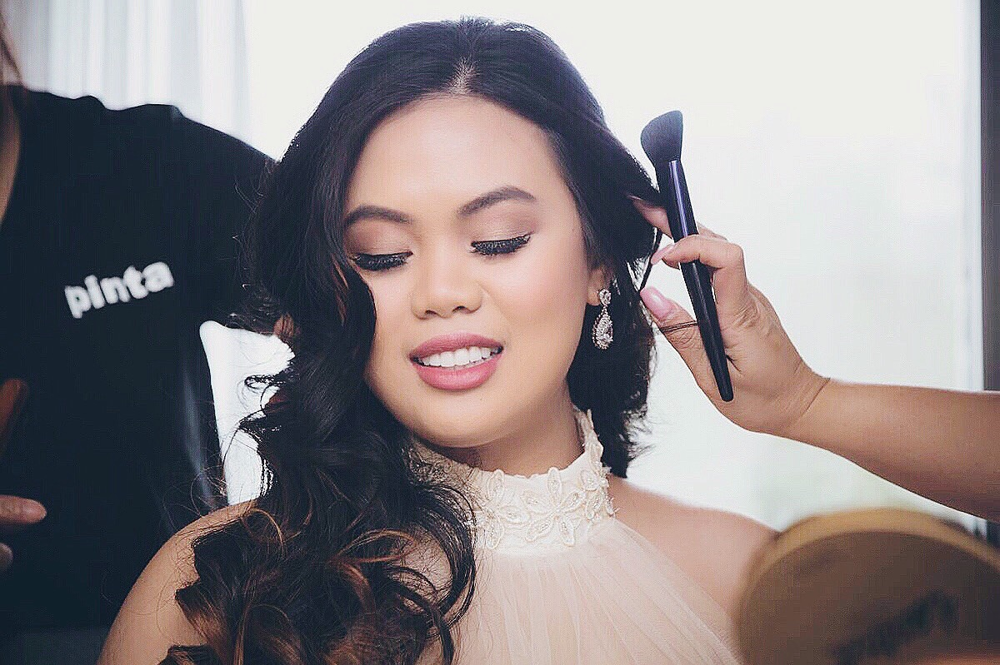

About Me

My name is Nerise Aiel. I was born in the Philippines on the 25th of May, year 1992.
I finished my bachelors in Hotel and Restaurant Management in MCL Mapua University last 2012.
I am currently taking my certificate in Cyber Security Management from University of Toronto and
Fullstack Web Developing Flex from the same university.
Sorry, I cannot write anything else. Also, I missed two classes because of family emergency. Please give me feedback on my assignment and
hopefully you'll let me know what I missed because I'm sure I missed a lot.
Thank you
Copyright @ NeriseAiel